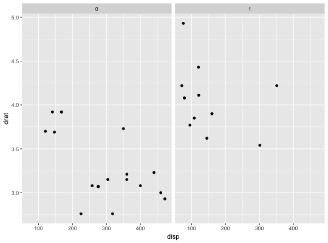
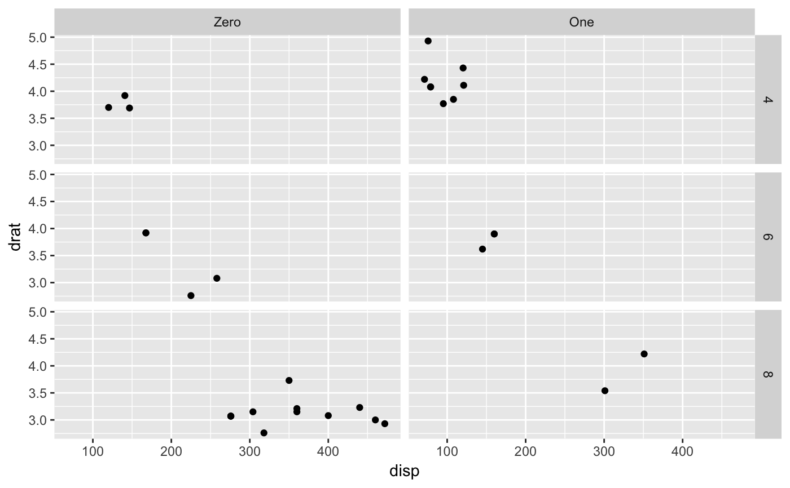
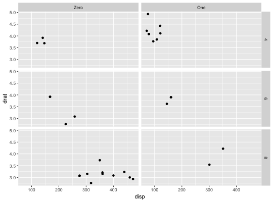

This transforms objects to labeller functions. Used internally by
labeller().
as_labeller(x, default = label_value, multi_line = TRUE)
default. If a non-labeller function, it is
assumed it takes and returns character vectors and is applied to
the labels. If a labeller, it is simply applied to the labels.# Rename labels on the fly with a lookup character vector to_string <- as_labeller(c(`0` = "Zero", `1` = "One")) p + facet_wrap(~am, labeller = to_string)# Quickly transform a function operating on character vectors to a # labeller function: appender <- function(string, suffix = "-foo") paste0(string, suffix) p + facet_wrap(~am, labeller = as_labeller(appender))# If you have more than one facetting variable, be sure to dispatch # your labeller to the right variable with labeller() p + facet_grid(cyl ~ am, labeller = labeller(am = to_string))